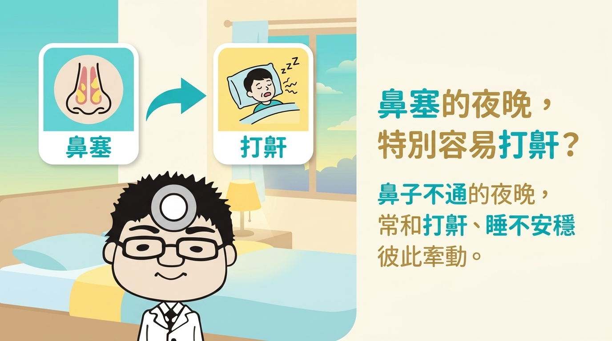
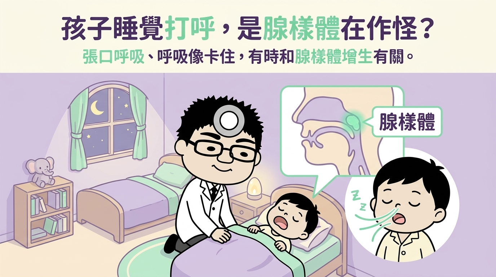
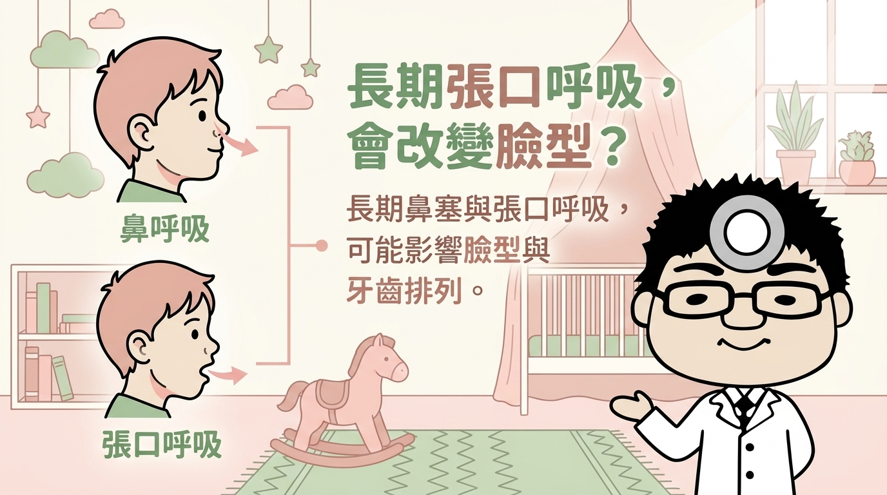
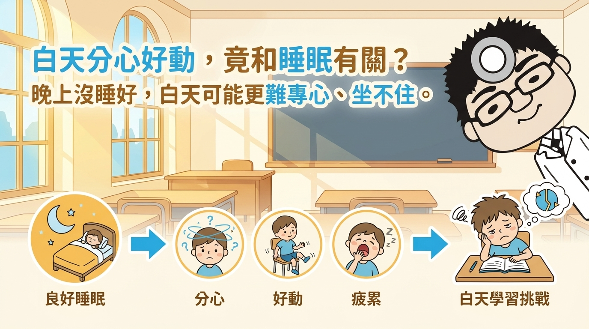
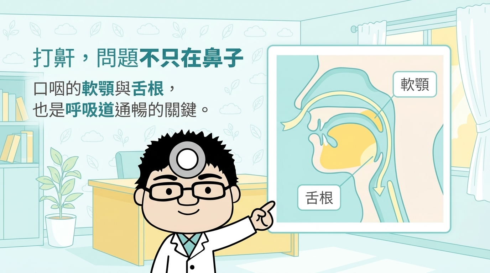
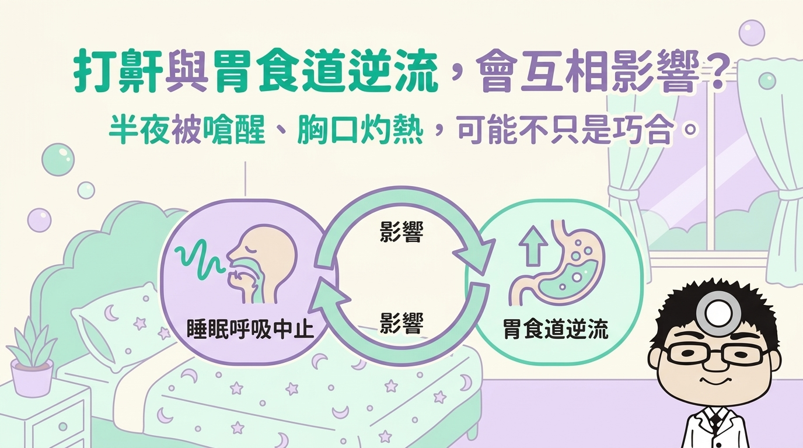
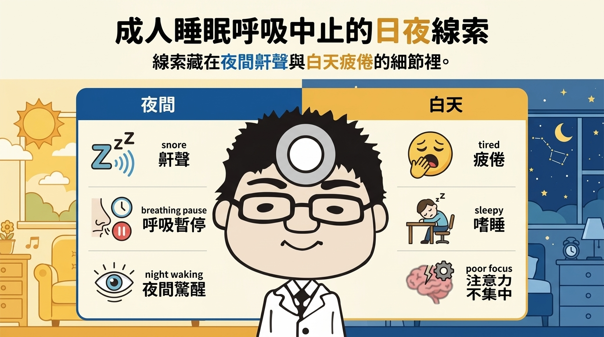
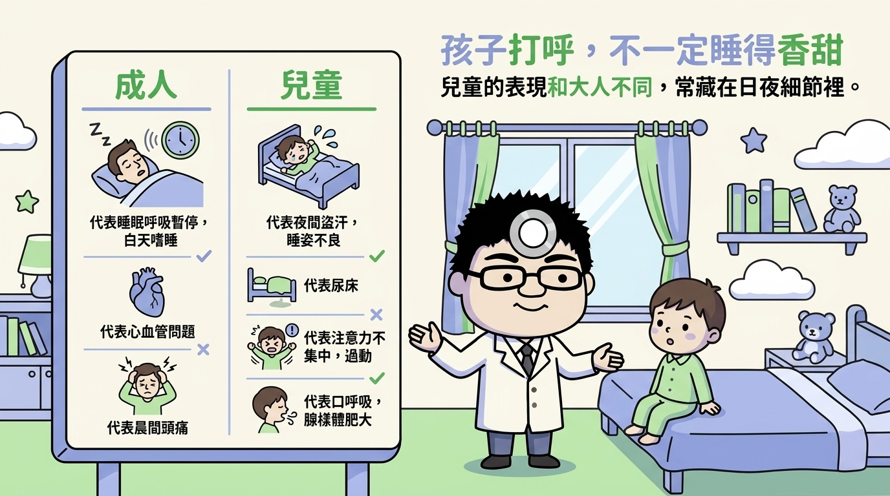
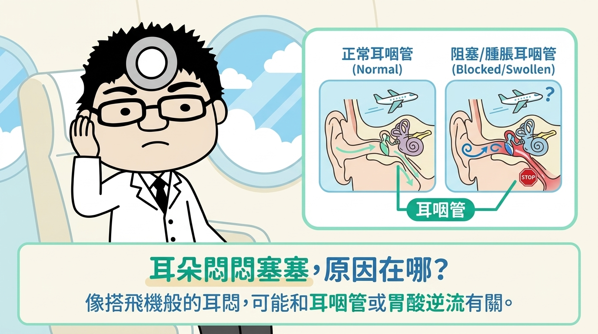

衛教專欄
由大豐耳鼻喉科醫師團隊撰寫的衛教資訊，協助您更了解常見的耳鼻喉問題與睡眠健康。

鼻過敏與睡眠品質的關係
許多人以為鼻過敏只是白天打噴嚏、流鼻水、鼻塞的困擾，卻沒有警覺到它其實也會影響夜間的睡眠品質。
閱讀全文
鼻過敏與睡眠呼吸中止的相關性
許多有鼻過敏的人都注意到，鼻塞嚴重的夜晚特別容易打鼾、睡得不安穩——這兩者之間確實常彼此牽動。
閱讀全文
兒童腺樣體增生與睡眠呼吸中止
孩子睡覺時打呼、張口呼吸，甚至呼吸聲像是「卡住」一下，在兒童身上有相當比例與腺樣體增生有關。
閱讀全文
兒童睡眠呼吸中止症與生長曲線
家長常關心孩子的生長曲線落在哪個百分位，比較少被注意到的是，夜間的睡眠呼吸狀況其實也可能和生長表現有關。
閱讀全文
兒童睡眠呼吸中止與面容變化
孩子長期睡覺張口呼吸、嘴巴閉不太起來，久了臉型與牙齒排列也跟著不同，這有時和長期鼻塞與睡眠呼吸問題有關。
閱讀全文
兒童睡眠呼吸中止症與注意力不集中、過動的相關關係
孩子白天容易分心、坐不住、情緒起伏大，這些表現有時和「晚上沒睡好」有關，較少被聯想在一起。
閱讀全文
打鼾與鼻中隔彎曲的相關關係
不少長期打鼾的人在檢查時被告知「鼻中隔彎曲」，於是好奇：打鼾是不是就是鼻中隔彎曲造成的？關係其實沒那麼單純。
閱讀全文
睡眠呼吸中止與軟顎、舌根構造的關係
長期打鼾或睡眠呼吸中止，問題不一定只在鼻腔——口咽部的軟顎與舌根構造，也常是影響呼吸道是否通暢的關鍵。
閱讀全文
女性打鼾、睡眠呼吸中止與女性荷爾蒙的關係
打鼾與睡眠呼吸中止不只發生在男性，女性同樣可能受影響，而且與不同人生階段的荷爾蒙變化有些關聯。
閱讀全文
止鼾牙套於睡眠呼吸中止症之應用
被診斷睡眠呼吸中止或長期打鼾的人，有時聽過「止鼾牙套」，卻不太清楚它是什麼、適合哪些人——它是處理方式之一，但並非人人適用。
閱讀全文
睡眠呼吸中止症與胃食道逆流的相關性
有些人長期打鼾、睡不安穩，又常感到胸口灼熱或半夜被嗆醒，卻不一定把這兩件事聯想在一起——兩者其實常彼此影響。
閱讀全文
睡眠呼吸中止症在成人病患的臨床表現
很多人以為「會打呼就是、不打呼就沒事」，其實成人睡眠呼吸中止的線索，散落在夜間與白天的許多細節裡。
閱讀全文
兒童睡眠呼吸中止症的臨床表現
孩子睡得鼾聲不斷，不一定代表睡得香甜——兒童睡眠呼吸中止的表現和成人不同，常藏在白天躁動與夜間張口呼吸等細節裡。
閱讀全文
胃食道逆流與中耳炎是否相關？
反覆中耳積液或中耳炎，多數人不會聯想到胃食道逆流——但胃酸逆流刺激耳咽管，有時與中耳問題相關。
閱讀全文
胃食道逆流與耳朵悶塞感是否相關？
耳朵悶悶的、像搭飛機般塞住，又一再出現——這類耳悶有時與耳咽管功能或胃食道逆流有關。
閱讀全文
肥胖與睡眠呼吸中止、打呼的相關性
談到打呼與睡眠呼吸中止，很多人先想到體重——但兩者是相關而非單一因果，體型纖瘦的人同樣可能發生。
閱讀全文
簡易的打呼判讀方式：如何初步察覺睡眠呼吸中止？
有些鼾聲背後可能藏著睡眠呼吸中止——留意「停—喘—停」的間歇鼾聲，在就醫前先初步察覺值得注意的徵兆。
閱讀全文Test
Test
閱讀全文